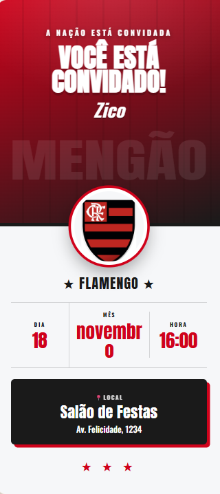
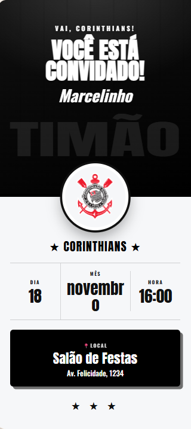
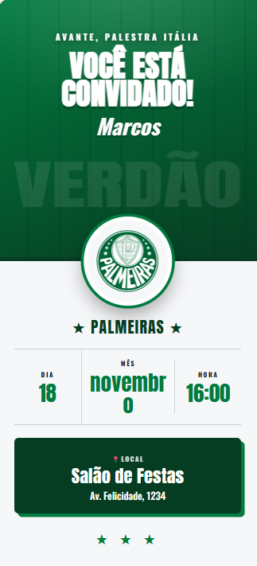
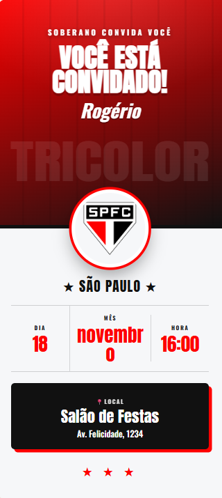
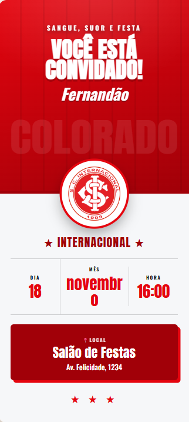
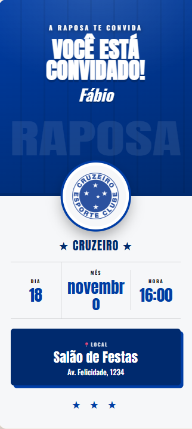

Convite de Aniversário de Time de Futebol: os 20 Times do Brasileirão
Torcedor não brinca em serviço nem na hora da festa. Reunimos os 20 clubes da Série A em convites digitais com a cor oficial de cada time e um espaço redondo para você colocar o escudo. É só personalizar e mandar no grupo do WhatsApp.
Por que um convite temático de futebol
Aniversário de criança apaixonada pelo clube, festa de adulto raiz ou até confraternização da torcida: um convite com a cara do time transforma o clima antes mesmo da festa começar. Em vez de um modelo genérico, o convidado abre o link e já bate o olho na cor do clube, no apelido da torcida e no escudo no centro — a mensagem fica pessoal e inconfundível.
Cada template usa a cor oficial do clube em um degradê de fundo, o apelido da torcida como marca d'água (Mengão, Timão, Verdão, Galo, Furacão…) e um medalhão redondo em destaque para o escudo. O restante — nome, data, horário e local — aparece de forma clara e organizada logo abaixo.
Os 20 times disponíveis
Estão prontos os 20 clubes da Série A do Brasileirão, cada um com sua identidade visual:
- Flamengo
- Palmeiras
- Botafogo
- Corinthians
- São Paulo
- Cruzeiro
- Atlético-MG
- Bahia
- Internacional
- Grêmio
- Fluminense
- Vasco
- Santos
- Red Bull Bragantino
- Vitória
- Mirassol
- Coritiba
- Athletico-PR
- Chapecoense
- Remo
Não achou o seu? Dá para adaptar qualquer um deles trocando a cor e o escudo direto no editor, ou começar por um dos templates do CrieConvites.
Exemplos de convites por time
Veja como fica o mesmo convite em clubes diferentes — a cor e o apelido mudam sozinhos conforme o time:






Nos exemplos acima o escudo aparece como um emblema com as iniciais só para ilustrar — no seu convite você sobe a imagem oficial do escudo do time.
Como colocar o escudo do seu time
No centro de cada convite existe um medalhão redondo. Enquanto você não envia a imagem, ele mostra "Adicione o escudo". Ao subir o arquivo, o escudo aparece inteiro dentro do círculo, sem cortar o desenho — funciona com imagem quadrada, com fundo transparente (PNG) ou até com um recorte retangular.
Dica: use uma imagem com o escudo bem centralizado e, de preferência, em PNG com fundo transparente. Assim ele encaixa perfeitamente no medalhão e combina com a cor do clube ao fundo.
Como montar em 4 passos
- Escolha o template do seu time na galeria de templates.
- Preencha o nome do aniversariante, o título da festa, a data, o horário e o local com endereço.
- Suba o escudo do time no medalhão e, se quiser, ajuste os detalhes no editor.
- Gere o link único e envie no WhatsApp — já com confirmação de presença e lista de presentes.
Quer ver um convite pronto antes de começar? Dê uma olhada no exemplo de convite.
Crie o convite do seu time grátis
Escolha o clube, personalize e envie no WhatsApp em minutos — com RSVP e lista de presentes.
Começar agora — é grátisPerguntas frequentes
Como fazer um convite de aniversário com tema de time de futebol?
Escolha o template do seu clube no CrieConvites, escreva o nome do aniversariante, a data, o horário e o local, suba o escudo do time e gere um link para enviar no WhatsApp. Cada template já vem com a cor oficial do clube.
Quais times de futebol têm convite pronto?
Os 20 clubes da Série A do Brasileirão: Flamengo, Palmeiras, Botafogo, Corinthians, São Paulo, Cruzeiro, Atlético-MG, Bahia, Internacional, Grêmio, Fluminense, Vasco, Santos, Red Bull Bragantino, Vitória, Mirassol, Coritiba, Athletico-PR, Chapecoense e Remo.
Posso colocar o escudo do meu time no convite?
Sim. Cada convite tem um medalhão redondo onde você sobe a imagem do escudo. Ela aparece inteira, encaixada no formato do medalhão, sem cortar o desenho.